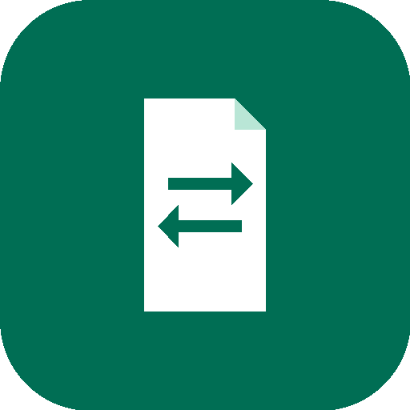

Dovra – Document Reader & Converter
Read and convert your documents privately.
Dovra opens and converts your documents entirely on your Android device. Your files are never uploaded, never sent to a server, and never used for advertising or tracking.

Why Dovra
Private by design
All reading and conversion happens locally. Dovra requests no internet permission for document processing.
Reader + converter
Preview documents as clean structured text, then convert to the format you need — with honest quality labels.
No account, no ads
Free to use. No sign-up, no subscriptions, no advertising, no analytics SDKs.
Your files, your storage
Open files with the system picker (Storage Access Framework) and save results with Save As. Dovra never takes broad storage access.
History, not surveillance
An on-device conversion history stores file names and formats only — never document contents.
Light & dark themes
Follow-system, light, and dark appearances with a clean Material 3 interface.
Supported formats
Dovra can open all formats below for viewing. Conversion targets depend on the source document — the app only offers conversions its engine genuinely supports, labelled Full or Simplified (with an honest note such as “Slide outline only”).
| Source | Convert to |
|---|---|
| TXT (full) · HTML, MD (simplified, text layout only) | |
| DOCX | TXT, HTML, RTF (full) · PDF, ODT, MD (simplified) |
| DOC (legacy, read-only source) | TXT (full) · HTML, DOCX, PDF (simplified) |
| ODT | TXT, HTML (full) · DOCX, PDF (simplified) |
| TXT | MD, HTML, PDF (full) |
| MD | HTML, TXT (full) · PDF (simplified, rendered text) |
| HTML | TXT (full) · MD, PDF (simplified) |
| RTF | TXT (full) · HTML, DOCX, PDF (simplified) |
| XML | TXT (full) · HTML (simplified, syntax highlighted) |
| XLSX | CSV, TSV, HTML (full) · PDF (simplified, table grid only) · XLS (simplified) |
| XLS | CSV, TSV (full) · XLSX (simplified) |
| ODS | CSV, TSV, HTML (full) · XLSX (simplified) |
| CSV | XLSX, HTML, TSV (full) · PDF (simplified, table grid only) |
| TSV | CSV, XLSX, HTML (full) |
| PPTX | TXT (full) · PDF, HTML (simplified, slide outline only) |
| PPT | TXT (full) · PDF (simplified, slide outline only) |
| ODP | TXT (full) · PDF (simplified, slide outline only) |
| EPUB | TXT, HTML (full) · PDF, MD (simplified) |
DjVu is explicitly unsupported. Presentations convert as text/outline extraction — Dovra never claims pixel-perfect slide rendering.
How it works
- Open a document with the system file picker, or from another app via “Open with”.
- Preview it as clean structured text; Dovra warns you if a file’s contents don’t match its extension.
- Convert by picking one of the genuinely supported targets, with a live progress indicator.
- Save or share the result with Save As, or keep it in your on-device history.
Temporary conversion files live in the app’s private cache and are deleted after conversion, on cancellation, on timeout, and by an automatic orphan sweep.
Free, independent, supported by users
Dovra is free and developed independently. If you find it useful, you can optionally support its development:
Donations are optional and handled entirely in your browser — never inside the app.